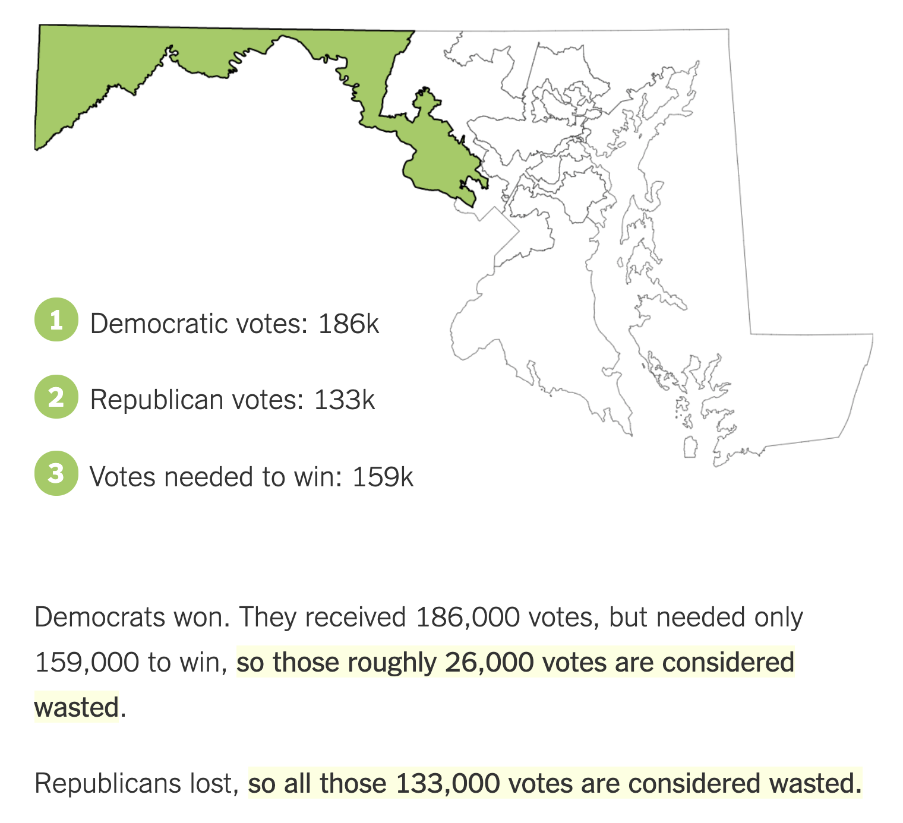
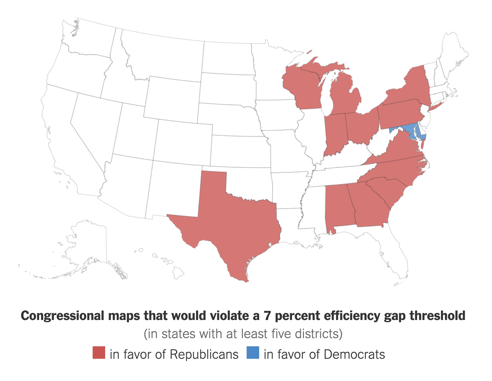

Can a Number Finally Solve The gerrymandering problem?
The 2nd serious approach to tackle partisan gerrymandering is a formula called the “Efficiency Gap” (EG for short) which aims to calculate the number of wasted votes in an election and determine how biased the districting plan was. In other words, it aims to understand how many votes were not needed by the winning party at the end of the day.
The pioneers of the EG are Nicholas Stephanopoulos and Eric McGhee (the creator), Harvard Law professor and research fellow at Public Policy Institute of California, respectively.
It may seem trivial at first glance, but the EG measure gives us a lot of insight into how a certain state has been districted:
“If (nearly) all the wasted votes belong to the winning side, it’s a packed district. If (nearly) all the wasted votes belong to the losing side, it’s a competitive district. And if there are several adjacent districts where most of the wasted votes are on the losing side, then it may be a cracked plan.”
Unlike MCMC where the statistical likelihood of a plan is determined, EG gives each district a score based on its fundamental formula: it’s essentially a measure of the difference between the total votes wasted by the winner and the total votes wasted by the loser. Let’s take a look at this through the example of Maryland’s 6th district:
The closer this number is to 0, the more fair the plan seems to be and a percentage of 7% or more is considered a serious/unconstitutional gerrymander. Here’s the congressional map from the 2016 election cycle that shows how many states were gerrymandered.
The math behind this formula is intricate, but I’ve made a short video doing my best to explain it as simply as I could:
Like MCMC, the EG was also used in a prominent court case - this time, trouble was brewing in the state of Wisconsin. Before you head on over to that section and uncover what went down there, feel free to play around with this interactive map showing how much each state was gerrymandered for the 2016 elections (all based on the EG, of course):